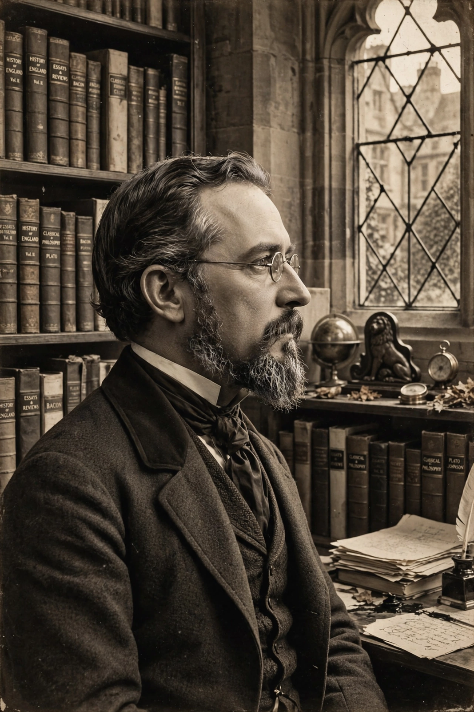

| Born | Walter Horatio Pater, August 4, 1839, Stepney, London, England |
|---|---|
| Died | July 30, 1894 (aged 54), Oxford, England |
| Occupation | Essayist, art and literary critic, tutor |
| Alma mater | The Queen's College, Oxford |
| Notable works | Studies in the History of the Renaissance (1873); Marius the Epicurean (1885) |
Walter Horatio Pater (4 August 1839 – 30 July 1894) was an English essayist, art and literary critic, and fiction writer, regarded as one of the great stylists of English prose. A tutor at Brasenose College, Oxford, he was a central figure of the Aesthetic movement and a formative influence on the Decadent movement and on writers including Oscar Wilde, W. B. Yeats, and James Joyce.
Pater was born in Stepney, London, the son of a surgeon who died when he was young. Educated at the King's School, Canterbury, he read Literae Humaniores at Queen's College, Oxford, and in 1864 was elected to a fellowship at Brasenose College, where he taught for the rest of his life. His quiet, retiring manner belied the controversy his writings provoked.
His first book, Studies in the History of the Renaissance (1873), revalued Renaissance culture through essays on Botticelli, Leonardo da Vinci, Michelangelo, and Winckelmann. Its famous "Conclusion" urged the reader to burn "with this hard, gem-like flame" — to prize intense aesthetic experience above all doctrine. The Conclusion was widely read as a manifesto of art for art's sake; alarmed by its reception among undergraduates, Pater suppressed it in the second edition (1877), restoring it, slightly altered, in 1888.
Marius the Epicurean (1885), a philosophical novel set in ancient Rome, developed his aesthetic philosophy in narrative form. Imaginary Portraits (1887), Appreciations (1889), and the unfinished Gaston de Latour followed. Pater's careful, musical prose and his elevation of the momentary impression influenced modernist literature profoundly; Yeats arranged Pater's prose on the Mona Lisa as free-verse poetry at the opening of the Oxford Book of Modern Verse.